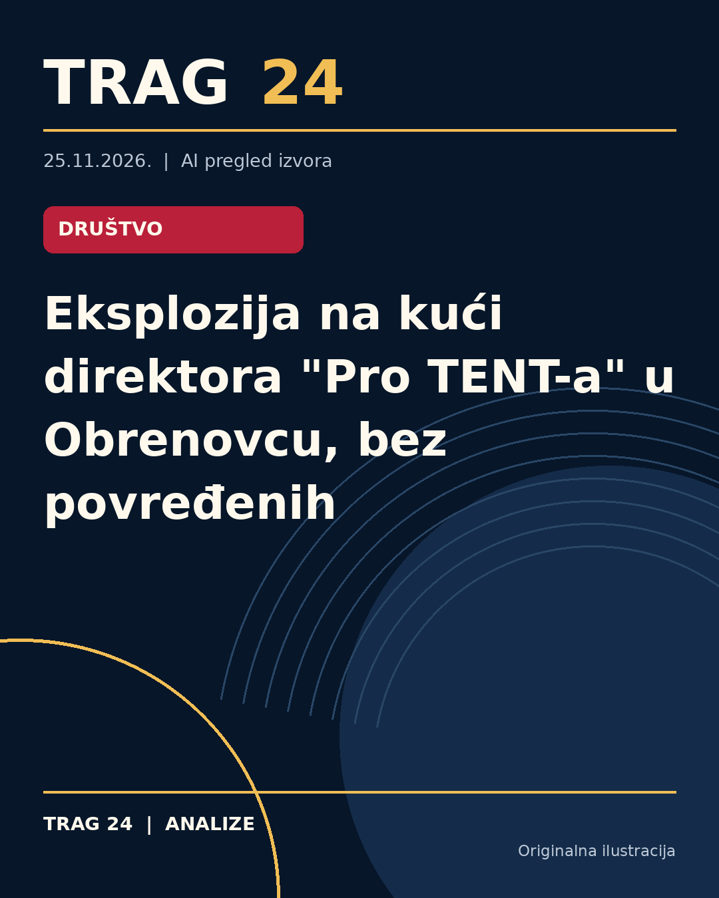

Eksplozija na kući direktora "Pro TENT-a" u Obrenovcu, bez povređenih

ŠTA SE DOGODILO
Rano jutros, nešto pre pet časova, na porodičnu kuću Slobodana Vujičića, direktora državnog preduzeća "Pro TENT" u Obrenovcu, bačena je eksplozivna naprava. Eksplozija je izazvala materijalnu štetu na fasadi i prozorima, dok povređenih nije bilo. Policija i nadležno tužilaštvo obavili su uviđaj, a ulica je bila blokirana tokom istrage.
HRONOLOGIJA
Slobodan Vujičić je na čelu "Pro TENT-a" od 2016. godine. Pre toga radio je u bankarskom sektoru i na poslovima javnih nabavki. Ranije su podnošene krivične prijave protiv njega i preduzeća zbog navodnih zloupotreba i pritisaka na zaposlene. Napad na njegovu kuću dogodio se u noći nakon višegodišnjih kontroverzi vezanih za poslovanje i funkcionisanje preduzeća koje je u vlasništvu države.
ŠTA NAVODE IZVORI
Prema informacijama iz medija, eksplozivna naprava izazvala je oštećenja na objektu bez povređenih. Policija intenzivno radi na otkrivanju počinilaca i motiva napada. Takođe se pominju ranije krivične prijave protiv Vujičića i njegovog preduzeća, uključujući sumnje na pritiske i prikupljanje glasova preko "Pro TENT-a". Izvori ne iznose direktne tvrdnje o motivima napada niti identitetu izvršilaca.
ŠTA JE POTVRĐENO
Potvrđeno je da je na kuću Slobodana Vujičića, direktora "Pro TENT-a", bačena bomba rano jutros u Obrenovcu. Materijalna šteta je nastala na fasadi i prozorima, a nije bilo povređenih. Policija i tužilaštvo su izvršili uviđaj i preduzimaju mere na rasvetljavanju okolnosti događaja. Vujičić je poznat kao dugogodišnji direktor preduzeća "Pro TENT" sa mestom prebivališta u Obrenovcu.
ŠTA NIJE POTVRĐENO
Nije potvrđeno ko je bacio bombu niti kakav je motiv napada. Takođe, nije pouzdano utvrđeno da li je događaj povezan sa ranijim prijavama i kontroverzama u vezi sa poslovanjem "Pro TENT-a" ili ličnim razlozima. Navodi o pritiscima i zloupotrebama nisu zvanično potvrđeni kao uzrok incidenta.
ŠTA OSTАJE OTVORENO: Ostaje nepoznato ko stoji iza napada i zbog čega je izveden. Nije poznato ni da li će biti novih incidenata vezanih za ovu situaciju ili da li će istraga o eksploziji dovesti do otkrivanja izvršilaca i motivacije. Takođe nije jasno da li će se događaj odraziti na poslovanje "Pro TENT-a" ili status Slobodana Vujičića na čelu preduzeća.
Izvori
- https://www.blic.rs/vesti/hronika/ko-je-slobodan-vujicic-direktor-pro-tent-a-kome-je-bacena-bomba-na-kucu/60t6xbm
- https://www.danas.rs/vesti/drustvo/rts-bacena-bomba-na-kucu-direktora-firme-pro-tent-slobodana-vujicica-u-obrenovcu/
- https://nova.rs/vesti/hronika/bacena-bomba-na-auto-servis-u-novom-sadu-vlasnik-danima-dobijao-pretnje-ranije-mu-napadnuta-i-kuca/
Ova analiza je pripremljena uz pomoć veštačke inteligencije na osnovu javno dostupnih izvora. Navodi izvora nisu nužno nezavisno potvrđeni.